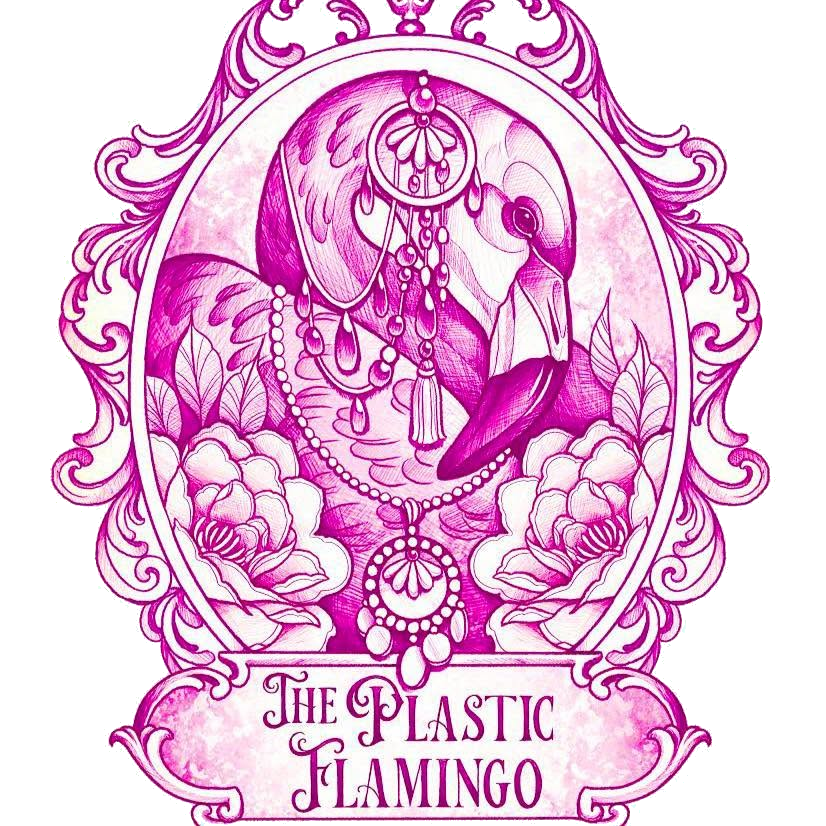

Neo-traditional color
Rich pinks, teals, purple, orange, yellow, and jewel tones with shading that gives every piece depth.
Bright neo-traditional · feminine maximalism
Bold black outlines, jewel-tone color, lush florals, celestial details, flamingos, berries, and a little sparkle. I make tattoos for people who want their forever art to feel joyful, expressive, and unmistakably theirs.
Book ↗
I work with confident outlines, dimensional color, ornamental framing, flowers, berries, moths, eyes, snakes, moons, and plenty of pink-and-teal Plastic Flamingo energy.
Rich pinks, teals, purple, orange, yellow, and jewel tones with shading that gives every piece depth.
Big blooms, berries, leaves, ribbons, and botanical details that make a tattoo feel lush and collected.
Celestial eyes, snakes, moths, flamingos, and classic symbols with a feminine, slightly magical edge.
About the artist
My work is colorful, detailed, and full of personality. My approach has a strong point of view: traditional tattoo structure, softened and amplified with floral beauty, bright color, celestial symbols, and a lot of pink joy.
About the artist ↗


Your turn
Tell me what you’re imagining, where you want it, and which colors you can’t stop thinking about.
Book ↗